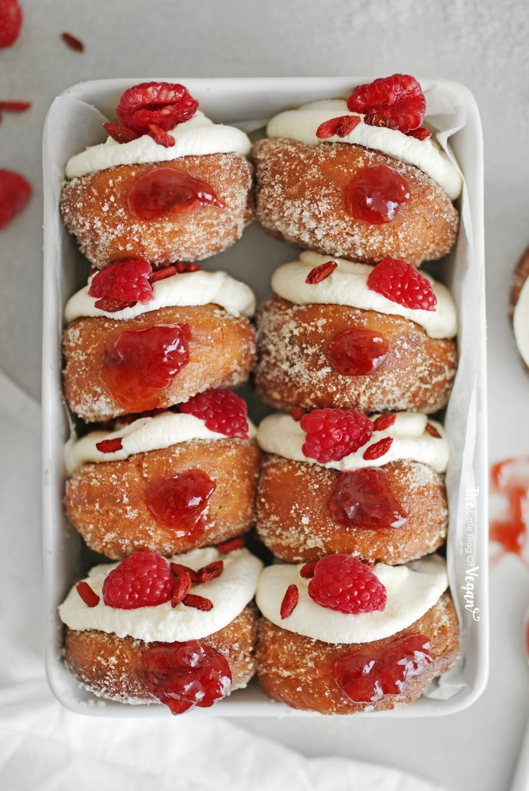

JAM DOUGHNUTS

Ingredients
- 490g (3 1/4 cups) plain flour
- 55g (1/4 cup) caster sugar
- 3 tsp dried yeast
- Pinch of salt
- 100g butter, melted
- 250ml (1 cup) milk, warmed
- 284g St. Dalfour Strawberry jam
- Icing sugar, to dust
Instructions
- Combine flour, sugar, yeast and salt in a bowl. Make a well. Mix in milk, butter and egg until dough starts to come together – it may be sticky
- Punch down the dough. Knead on a lightly floured surface for 2 minutes or until smooth. Roll out dough until 1cm thick. Rest dough for 2 minutes
- Roll out batter and use a 7cm round cutter to cut out discs. Don’t cut out centres. Place on a lined baking tray. Set aside for 30 minutes to prove.
- Deep-fry for 1 minute each side or until golden and puffed. Place on a plate lined with paper towel.
- Spoon a 284g jar of St. Dalfour Strawberry Jam into a piping bag fitted with a 5mm nozzle. Push the nozzle into the side of the doughnuts and pipe in the jam. Dust with icing sugar.